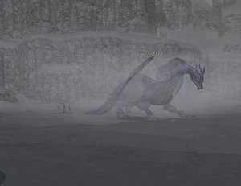

Level 75 reference · Zenith rules
|
Job: Dark Knight Notorious Monster |
 |

|
Zone |
Level |
Drops |
Steal |
Spawns |
Notes |
|
95 |
1 |
A, L, T(S) | |||
|
HP = Detects Low HP; M = Detects Magic; Sc = Follows by Scent; T(S) = True-sight; T(H) = True-hearing JA = Detects job abilities; WS = Detects weaponskills; Z(D) = Asleep in Daytime; Z(N) = Asleep at Nighttime | |||||
Notes:
- Located: (G-7), (G-8)
- Respawns Every: 3-5 days
- Killable by: 18+ characters level 75
- Special Attacks:
- Draw In
- Auto Regen: Low Regen rate.
- Blood Weapon: Used multiple times after ~85% life. If used on the ground, it will extend the time he stays on the ground.
- Glacial Breath: Cone Attack Ice damage (~100-200 on feet, 2000+ otherwise), used on the ground
- Absolute Terror: heavy ranged single-target Terror effect, used on the ground
- Horrid Roar: Dispel all buffs on the target, Hate Reset, used on the ground
- Gregale Wing: 20' AoE magic (Ice) damage (~400-700) and Paralysis, used in the air and on the ground
- Sleet Blast: AoE Ice damage (~400-600), used in the air
- Touchdown: 30' AoE physical damage (~250), used when landing
- Spike Flail: AoE physical damage (~2000), used when hate is acquired by someone out of the range of the head of the Wyrm.
- Ice Magic: Ice Spikes, Blizzaga III, Paralyga, Bindga
- Sub-30% mode: When under 30% HP, Jormungand will use special abilities at an increased rate. Also, he gains the ability to Horrid Roar three times back-to-back. This will often cause a Spike Flail for those inexperienced with Wyrms. The last 30% should be handled with caution for this reason.
- Jormungand's flight time is 30 seconds followed by 1 minute of ground time.
Adapted from Eden Wiki: Jormungand · Contributors and history · CC BY-SA 4.0. Revision 44509. Layout, links and optional background text adapted for Zenith.